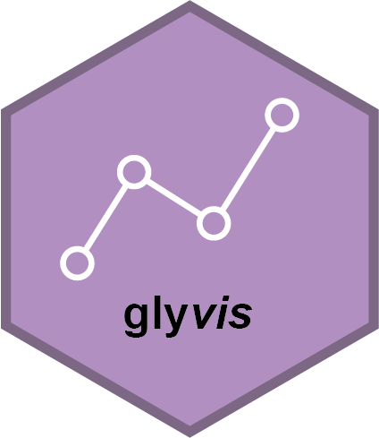
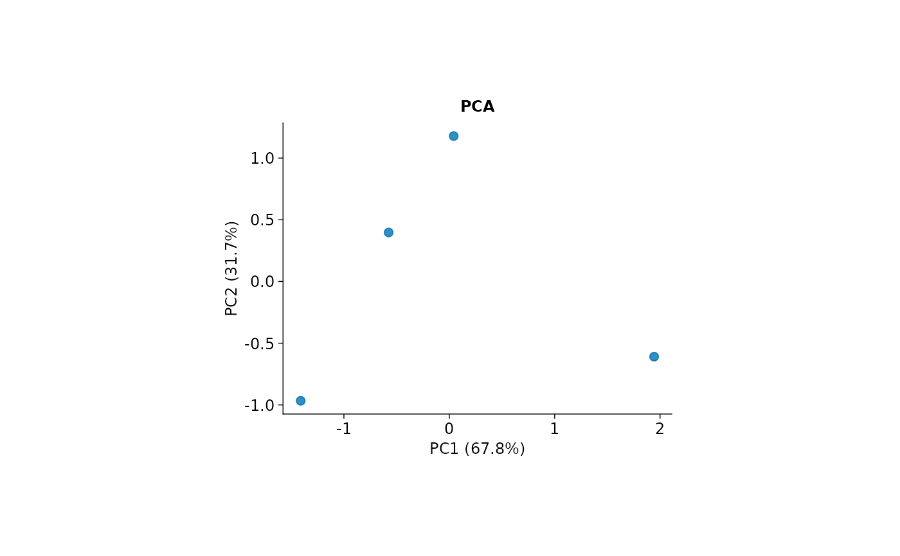

Customize glyvis plots with tidyplots
glyvis_plot_options.RdAll plot_*() functions and statistical autoplot() methods return a
tidyplot, which also inherits from ggplot. Continue styling with
tidyplots::adjust_*() functions, add components with tidyplots::add_*(),
or use ordinary ggplot2 layers. No global theme or options are changed.
Common options
Pass these named arguments through ... in any plotting entry point:
title: optional plot title.width,height: plot-area dimensions in millimetres;NULL(default) uses tidyplots defaults (50 by 50 mm). SetNAto fill the available graphics device. These are not export-page dimensions.fontsize: base text size in points, default 9.family: font family, default"sans".palette: color vector. A named vector maps group names to fixed colors across different plots and subsets. Unnamed palettes follow factor order; use the same factor levels or a named palette for consistent group colors. Continuous heatmaps use blue-white-red; other plots use distinct hues.
Plot-specific options
PCA:
axes = c(1, 2),label = FALSE,add_ellipse = FALSE, andtop_n = NULLfor loading arrows. Biplots rescale arrows by a common display multiplier; scores and explained variance are unchanged.PCA, PLS-DA, OPLS-DA, t-SNE, UMAP and volcano scatter plots:
point_size = 2(volcano: 1.5),alpha = 0.8(volcano: 0.7), andlabel = FALSE. Embedding score plots also acceptadd_ellipse = FALSE.Loading plots:
label = FALSE,top_n = NULL. All arrows are retained by default. An explicittop_nselects the largest squared loading norms.VIP and ranked dot plots:
top_n = NULL; an explicit positive integer selects the largest plotted values. All variables are retained by default.Boxplots:
points = TRUE,ncol = NULL,label_width = 24, andscales = "free_y". Long facet labels wrap without truncation. Points are observations; boxes show the median and quartiles with 1.5-IQR whiskers. Usescales = "fixed"for comparisons across facets.Heatmaps:
scale = "row"(also"column"or"none"),cluster_rows = TRUE,cluster_cols = TRUE(alsoFALSEor compatiblehclustobjects),show_rownames = FALSE,show_colnames = NULL, andna_col = "grey90". Columns are labelled automatically up to 40 samples. Values are log2(abundance + 1), then optionally standardized. Clustering orders rows and columns; dendrograms are not drawn inside the heatmap. Use the hierarchical-clusteringautoplot()method for a dendrogram.Correlation plots:
label = FALSE,digits = 2, andtriangle = "lower"(also"upper"or"full"). Colors span -1 to 1.Sequence logos: pass glyph options in
logo_args, a named list passed toggseqlogo::geom_logo(), e.g.list(method = "prob").
Migration from earlier backends
Arguments specific to factoextra, EnhancedVolcano, GGally, pheatmap, and
ggdendrogram are no longer forwarded. Unsupported arguments error instead
of being ignored. Use the options above or modify the returned tidyplot.
Replace PCA geom = "point" with the default label = FALSE,
repel = TRUE with label = TRUE, and volcano pointSize with point_size.
Move ggseqlogo arguments from ... into logo_args.
Export
Use ggplot2::ggsave() with explicit width, height and units, or
tidyplots::save_plot(). PDF/SVG preserve vector elements and editable text;
use a suitable graphics device and inspect labels at the final physical size.
Large feature sets may require a larger output, label suppression, or an
explicitly selected subset. Automatic label repulsion may omit crowded
text but never removes the underlying observations.
Examples
if (requireNamespace("glystats", quietly = TRUE)) {
mat <- matrix(c(3, 8, 5, 9, 2, 7, 6, 4, 1, 5, 6, 2), nrow = 3,
dimnames = list(paste0("V", 1:3), paste0("S", 1:4)))
se <- SummarizedExperiment::SummarizedExperiment(assays = list(mat))
p <- plot_pca(se, title = "PCA", fontsize = 9)
p |> tidyplots::adjust_size(width = 80, height = 60)
}
